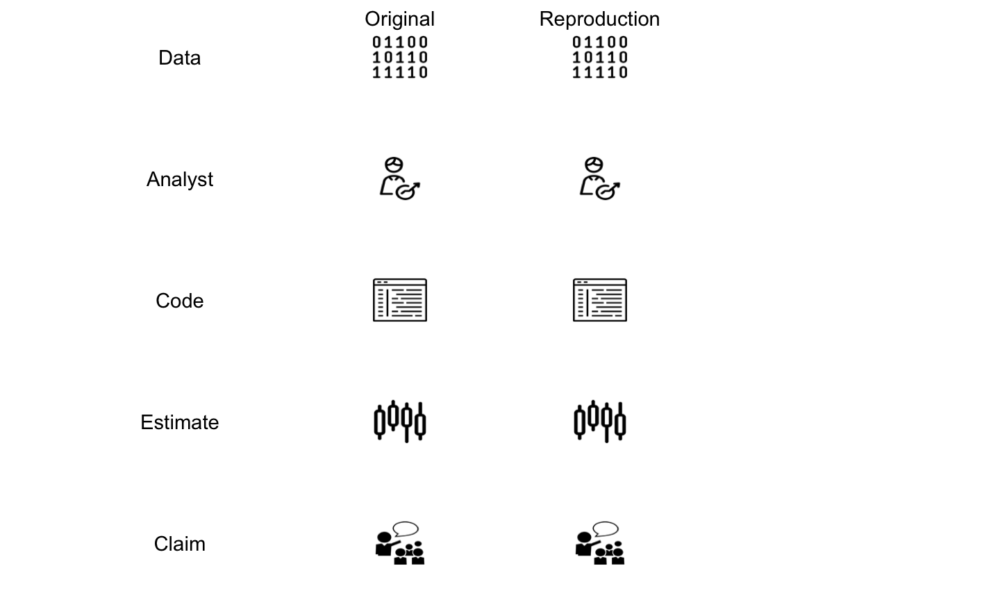
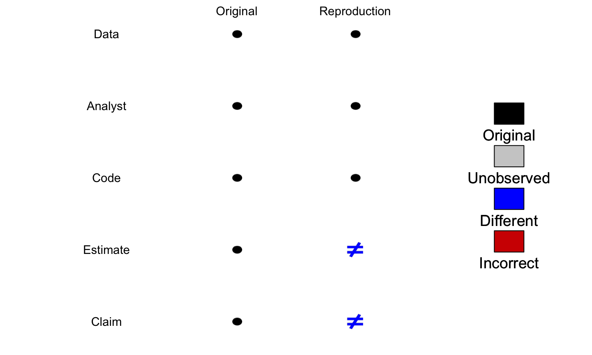
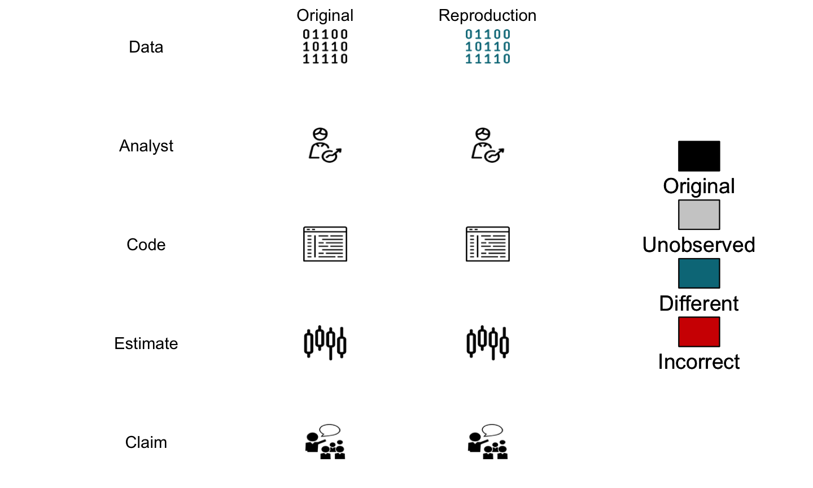
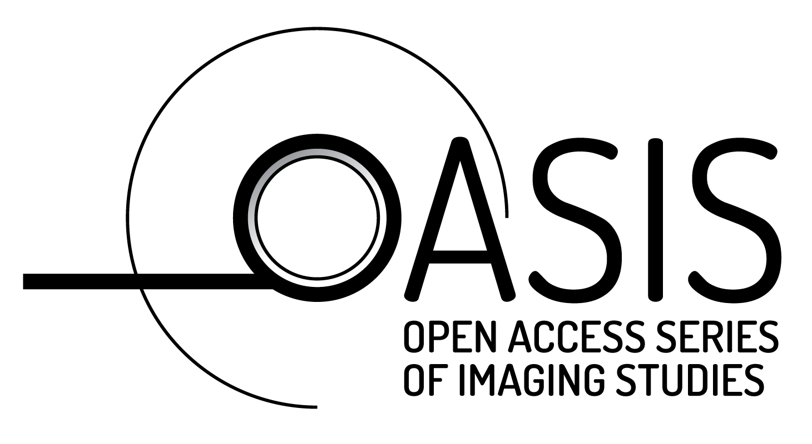

“Reproducibility” in General
Neuroimaging Reproducibility
Neuroimaging Reproducibility Starts w/Data
Controversy in Neuroimaging: Won’t Reproduce!

Controversy in Neuroimaging: Won’t Reproduce!
Software: Versions!
Gronenschild et al. (2012) (bold added):
“differences were on average 8.8±6.6% (range 1.3–64.0%) (volume) and 2.8±1.3% (1.1–7.7%) (cortical thickness). About a factor two smaller differences were detected between Macintosh and Hewlett-Packard workstations and between OSX 10.5 and OSX 10.6. The observed differences are similar in magnitude as effect sizes reported in accuracy evaluations and neurodegenerative studies.”
Minimum Reproducibility Goal

Controversy: Different Pipelines
It’s typical to have lots of software choices

Carp, Joshua. “The secret lives of experiments: methods reporting in the fMRI literature.” Neuroimage 63.1 (2012): 289-300. (Carp 2012)
Controversy: Ground Truth? (Replication)

Within-Population Replication (CV)

Genomics is one of the best examples of strives in Reproducibility: Data + Code Repositories
Bioinformatics Repository: Bioconductor

- centralized bioinformatics/genomics packages
- large community/number of packages (> 1300)
- published tutorials and workflows
- additional requirements to CRAN (e.g. packages need vignettes)

An R Platform for
Medical Imaging Analysis
What is Neuroconductor?
- A community of developers and users of R packages for imaging
- A website https://neuroconductor.org/.
- with tutorials and help
- A team helping developers and users (John, Adi Gherman, Ciprian Crainiceanu, Brian Caffo)
- A centralized repository of maintained packages
Goal: Centralize the packages (currently 73)

Many Cases in Neuroimaging: Why?

Data: Submitting Not Required
|  |

|

|

|

|

|

|
R packages to access these repositories
- so if there, need ability to access
Seldomly Reported Inclusion/Exclusion

Opportunities: RCT/CONSORT diagrams
What we need: tutorials

Need Workflows
- all R code
- interface/pipeline tool
- “native” R code
Complete pipeline
- preprocessing and analysis

R Packages to Download Data
- nitrcbot - download f/NITRC
- neurovault - access neurovault
- MNITemplate - population-level “template” image
- EveTemplate - different template image
- kirby21 - sample data with multimodal imaging
- neurohcp - Human Connectome Project
- Rxnat - XNAT interface
- malf.templates - template images f/label fusion
Publishing Software should be Rewarded
- R Journal - see
rticles::rjournal_article() - F1000 - https://f1000research.com/collections/Neuroconductor
- JOSS - https://joss.theoj.org/
- JSS - see
rticles::jss_article() cranlogstrack downloads- neuroconductor API tracks downloads
Conclusions
- Need data submitted (journals need to help)
- but need easy tools to access the data
- Analysis tools exist but need more
- Develop more standardization like BioConductor
- standard data structures
- publishable pipelines
Bibliography
Carp, Joshua. 2012. “The Secret Lives of Experiments: Methods Reporting in the fMRI Literature.” Neuroimage 63 (1). Elsevier:289–300.
Gronenschild, Ed HBM, Petra Habets, Heidi IL Jacobs, Ron Mengelers, Nico Rozendaal, Jim Van Os, and Machteld Marcelis. 2012. “The Effects of Freesurfer Version, Workstation Type, and Macintosh Operating System Version on Anatomical Volume and Cortical Thickness Measurements.” PloS One 7 (6). Public Library of Science:e38234.
Patil, Prasad, Roger D. Peng, and Jeffrey Leek. 2016. “A Statistical Definition for Reproducibility and Replicability.” bioRxiv. Cold Spring Harbor Laboratory. https://doi.org/10.1101/066803.